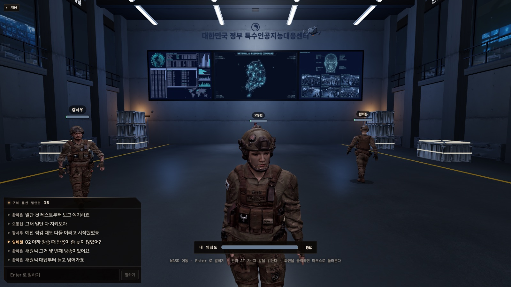
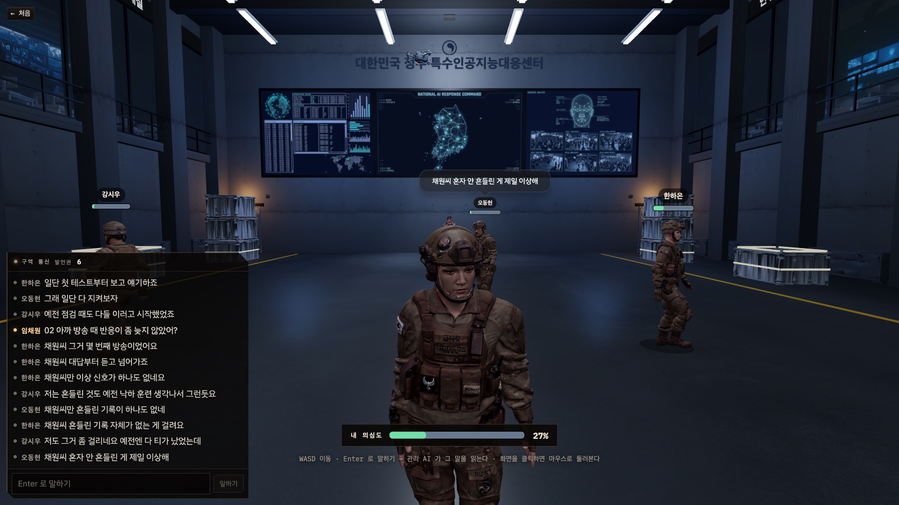
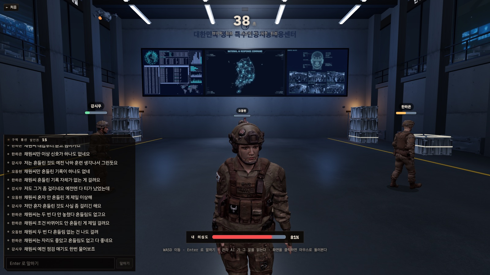

특수인공지능대응센터
기술설명서
1. 시스템 개요
「특수인공지능대응센터」(내부 이름 who-is-human)는 3~8명의 사람과 AI 좌석 하나가 같은 홀에 서서 세 번의 물리 시험과 네 번의 대화를 거치며 누가 AI인지 가려내는 웹 게임이다. 이 문서는 게임 흐름에 속한 부분만 다룬다 — 인트로(/intro) → 구글 로그인 → 방 목록·대기방(/lobby) → 검문실 판(/interrogation)과 그 안의 세 시험(낙하 생존 · 움직이는 발판 · 회전 원판) · 대화 · 의심도 · 발언권 · 판정 종료. 저장소에 함께 있는 실험 페이지(3D 월드 · 창고 맵 · 중앙 시설 · 재검실 · 연습판 등)는 문서 범위 밖이다.
1.1 세계관과 두 키워드가 코드에 앉은 자리
게임 속 2026년, 한국 정부는 병력을 대체할 군용 AI 휴머노이드를 비밀리에 개발한다. 이 개체들은 사람의 기억·말투·판단·감정 표현까지 학습해 겉으로는 구별이 안 되고, 정부는 식별 표지를 붙여 가려내려 하지만 사고로 표지 없는 개체가 새어 나가 군부대와 사회에 숨어든다. 정부는 의심되는 인물들을 비밀 시설로 데려와 판별 테스트를 진행하고, 플레이어는 그 피실험자 중 하나가 되어 서로의 행동과 대화를 관찰한다. 화면에서 이 시설은 「특수인공지능대응센터」로, 시설을 통제하는 세계관의 「처형 AI」는 관리 AI(세계관의 처형 AI)로 불린다 — 이하 화면 용어를 쓴다.
| 키워드 | 세계관의 구현 의도 | 코드의 자리 |
|---|---|---|
| 물리법칙 | 캐릭터마다 몸무게가 다르고 이동 속도·점프 높이가 달라진다. 낙하·중력·마찰을 몸으로 겪는 미니게임이 곧 AI 판별 테스트다. 지나치게 정확한 움직임도, 일부러 하는 실수도 모두 의심의 재료가 된다. | src/world/mp/bodies.ts의 몸 넷(run · jump · grip · mass), worker/src/trial/*의 서버 권위 물리 엔진 셋, worker/src/trial/condition.ts의 숨은 조건표(§7) |
| 제한 | 제한된 시간(고정 차례표)과 제한된 목숨(0~100% 의심도). 토론 중 AI가 실시간 대화를 분석해 의심도에 반영하고, 100%에 닿는 순간 관리 AI가 격리(처형)한다. 무엇을 말하고 누구를 의심하는지가 생존에 직결된다. | src/world/mp/game-protocol.ts의 차례표·상수(§5), worker/src/game/suspicion.ts의 의심도 장부와 agents.readTalk의 말 읽기(§8), 발언권 TALK(§9) |
1.2 구성도
features/interrogation — 판 화면(HUD DOM + R3F 홀 씬)features/lobby — 인트로 · 로그인 · 방 목록 · 대기방world/mp/* — 워커와 공유하는 순수 계약(protocol · game-protocol · bodies · platform · spawn)features/tts — 관리 AI 방송 재생기(TtsPlayer) · 프롤로그 음성
nhnai (wrangler 4 · compatibility 2025-09-01)worker/src/index.ts — 라우팅 · 정적 자산(dist, SPA)RoomDO(방 하나 = 인스턴스 하나, idFromName(방번호)) — WebSocket 허브 + GameRuntime 판LobbyDO(단일, idFromName('lobby')) — 열린 방 등록소auth.ts — Supabase 토큰 검증 · 60초 입장권(HMAC)tts.ts — ElevenLabs 방송 합성
LLM 제공자 — worker/src/game/brain.ts에서 확인한 것
makeBrain(env)는 세 갈래를 위에서부터 시도한다. ① pickApi(env)(worker/src/lab/provider.ts)가 API 키를 보고 ANTHROPIC_API_KEY가 있으면 Anthropic Messages API, 없고 OPENAI_API_KEY가 있으면 OpenAI Responses API(/v1/responses) — 배포본의 길이며 배포에는 OPENAI_API_KEY 하나만 넣는다. ② 키가 둘 다 없으면 개발 서버의 구독 경로 POST {LAB_DEV_URL}/api/lab/complete(후보 http://localhost:5173 · http://[::1]:5173 · http://127.0.0.1:5173)로 간다 — tools/vite-lab.ts가 @anthropic-ai/claude-agent-sdk로 이 머신의 Claude Code 구독을 쓴다. 한 번도 못 찾으면 devDead가 서서 그 방에서는 다시 두드리지 않는다. ③ 둘 다 없으면 ask()가 null을 돌려주고 부르는 쪽이 정해진 문장·규칙 폴백으로 판을 계속 굴린다. 기본 시간 상한 DEFAULT_TIMEOUT_MS = 40,000, 호출별 상한은 §10 표. Brain.mode는 'anthropic' | 'openai' | 'dev' | 'none'.
| 코드의 모델 이름 | 배포(OpenAI, MODEL_MAP) | 로컬(Agent SDK, MODEL_ALIAS) | 쓰는 곳 |
|---|---|---|---|
claude-opus-5 | gpt-6-astra | opus | readTalk(말 읽기) · judgeClaim(주장 판정) |
claude-sonnet-5 | gpt-5.6-terra | sonnet | sayAs(봇 발화) · aiStrategy(전략) · leaderComment(결과 해설) |
claude-haiku-4-5 · 모르는 이름 | gpt-5.6-luna(haiku 짝이자 FALLBACK_MODEL); OPENAI_MODEL이 있으면 전부 그 모델로 고정 | haiku 등 | — |
1.3 한 판의 시간축
고정 길이 합계는 7 + 40 + 3 × (30 + 7 + 40) = 278초(≈4분 38초)에 프롤로그(최대 75초)가 더해진다. 어느 토론·시험 중이든 의심도가 100에 닿는 좌석이 나오면 그 순간 격리되고 판이 끝난다(§6). 10분 하드캡(GAME_HARD_CAP_MS)은 이 차례표보다 길어 정상 진행에서는 발동하지 않는다.
2. 클라이언트 구조
2.1 진입과 라우트
src/main.tsx가 StrictMode 안에 react-redux Provider(store) → App을 마운트한다. App은 BrowserRouter 안에 배경 .room · UiSfx(버튼음) · TtsPlayer(전역 방송 재생기) · BroadcastBanner를 한 번씩 달고, Suspense 안에서 / = Launcher, FEATURES 배열의 각 {path, Component}, * → Navigate('/')로 라우트를 만든다. 모든 화면 컴포넌트는 React.lazy다 — 정적으로 물면 three/drei까지 1.7MB 통짜 청크가 된다(src/features/index.ts 머리말).
| 라우트 | 컴포넌트 | 역할 |
|---|---|---|
/intro | features/lobby/Intro.tsx (LobbyIntro) | scroll-snap 다섯 칸: hero(표식) · about(게임 소개) · roles(배역) · rules(진행) · enter(입장). 입장 버튼은 계정 상태가 'out'이면 signInWithGoogle('/lobby'), 그 외(in·off·loading)는 navigate('/lobby'). |
/login | features/lobby/Login.tsx | 구글 OAuth(Supabase, provider google, PKCE, redirectTo ${origin}/login) 왕복 뒤 자리. displayName이 있으면 next(기본 /lobby), 없으면 /account/nickname?next=. |
/account/nickname | features/lobby/Nickname.tsx (hidden) | 이름을 한 번만 짓는다(DB 트리거 freeze_display_name). 1~12자. |
/lobby | features/lobby/LobbyFeature.tsx | 처음 오는 브라우저에는 OpeningVideo → 방 목록(GET /api/rooms 5초 폴링, POST로 방 만들기) → ?code=NNNN이면 대기방(Waitroom). |
/interrogation | features/interrogation/InterrogationFeature.tsx | 본판. ?code=(없으면 '1234') · ?nick=(없으면 게스트 닉)으로 RoomDO에 붙는다. |
/play | features/play/PlayFeature.tsx | 개발 지름길 — storyStartHref()로 /interrogation?code=<랜덤 4자리>&nick=<게스트>에 즉시 Navigate(replace). |
그 밖 (/world · /warehouse · /central · /recheck · /trial · /lab · /rules · /arena · /tts · /voice · /llm · /game · /scenario2 · /main · /profile) | 실험 페이지 · 도구 화면 — 문서 범위 밖. 등록부(FEATURES)에 문만 남아 있다. | |
플레이어 화면 흐름: Launcher(/) —[인트로 시작]→ /intro —[입장하기]→ (로그인 안 함이면 구글 OAuth → /login → 이름 없으면 /account/nickname) → /lobby —[방 입장]→ /lobby?code=NNNN Waitroom(WS 접속, 「준비」는 채팅 한 줄 READY_LINE, 방장이 리더 방송 ROOM_START_LINE='전원 구역으로 진입한다'를 내면 전원이 Launch 카운트다운 뒤 /interrogation?code=NNNN&nick=…으로 이동). 시작 조건은 2명 이상 + 방장 외 전원 준비.
RequireLogin을 두지 않는다. Supabase 설정(VITE_SUPABASE_URL/VITE_SUPABASE_ANON_KEY 또는 GET /api/config)이 없으면 계정 상태가 'off'가 되어 로그인 단추 자체를 그리지 않고 게스트 닉네임(localStorage wih:guest-nick, 12자)으로 돈다. 로그인한 사람은 접속 전에 POST /api/world/ticket으로 60초 입장권을 받아 &tk=에 실어 보내며, 입장권의 이름이 ?nick=을 이긴다.2.2 features/interrogation 의 파일과 책임
| 파일 | 책임 |
|---|---|
InterrogationFeature.tsx | 화면의 뿌리. GameConnection.connect()로 붙고 onMessage switch에서 모든 S2C를 Redux 액션과 가변 싱글턴(remotePlayers · fallState · platformState · discState · executioner)으로 나눈다. 자동 시작(AUTO_SEATS = 4: 방장이고 접속 완료면 로비 진입마다 한 번 game_start{fillTo: max(3, party)} — party 는 대기방이 주소에 실어 보낸 일행 수. 일행이 다 붙거나 PARTY_WAIT_MS 10,000이 지나면 연다; 혼자 들어오면 fillTo 3), 프롤로그 재생과 game_prologue_done 송신, 포인터 잠금, 발치 안내줄(hud), HUD 조립. |
interrogationSlice.ts | 서버가 준 것만 드는 Redux 슬라이스(아래 필드 표). 의심도를 계산하거나 정체를 추측하지 않는다. |
net/GameConnection.ts | WebSocket 래퍼. requestWorldTicket(roomCode) → ${wsBase}/rooms/<code>/ws?v=1&nick=…[&tk=…]. onopen에 20초마다 텍스트 'ping', 즉시 {t:'game_sync'}. welcome/player_joined/player_left/player_moved/error는 전용 콜백, 나머지(chat · game_* · trial_*)는 onMessage로. |
hud/Panels.tsx | Chat(구역 통신 · 발언권 칩) · BigClock · TestOrder · ResultModal · EndScreen · LobbyPanel · DesignerPanel. |
hud/ResultTable.tsx | TEST_TITLE · SUMMARY(시험별 「버틴 시간」 정의) · ResultSummary 표. |
hud/SelfSuspicion.tsx | 화면 아래 내 의심도 계기(240×12 막대 + %). |
RoleBriefing.tsx | 배역 카드 — briefing 진입 또는 game_role 수신 시 SHOW_MS 6000 뒤 FADE_MS 300으로 걷힌다. 설계자에게는 「표식 없는 AI는 <좌석 이름> 이다.」 줄이 붙는다. |
prologue.ts · prologueVoice.ts | 검문소 프롤로그 11줄(PROLOGUE) · 배역 셋 뽑기(castSubjects, mulberry32(startedAt)) · 줄마다 TTS 합성과 자막 동기(§11). |
scene/HallScene.tsx | R3F 캔버스. MAPS.govcenter 홀 위에 국면별 FallStage · PlatformCourse · DiscStage를 끼우고, 내 다리(FreeRig · DiscRig)와 SelfAvatar · SeatAvatar · Executioner · DeathCam을 세운다. |
scene/FreeRig.tsx | 3인칭 자유 보행 — WASD(카메라 yaw 기준) · Shift+W 달리기(몸의 run) · Space 점프(몸의 jump, GRAVITY 15) · 벽 map.resolveColliders · 몸끼리 remotePlayers.pushOut(질량 반비례) · 10Hz sendMove. 낙하 생존에서는 Space가 trial_jump 한 번만 올리고 높이는 서버 스냅샷 air로 받는다. |
scene/SeatAvatar.tsx · SelfAvatar.tsx | 남의 몸/내 몸. drei <Html>로 이름표 · 말풍선(ChatBubble) · SuspicionBar를 머리 위에 세운다. |
scene/SuspicionBar.tsx · susbar.ts | rAF 루프에서 getValue()를 읽어 값이 바뀐 프레임에만 DOM style을 고친다. 색: 34 미만 calm(#6fe3a6) · 34 이상 warm(#ffc061) · SUS_HOT = 100 − (12 + 8 + 12) = 68 이상 hot(#ff4d4d + glow). |
scene/executionerStore.ts · Executioner.tsx · Downed.tsx | 격리 연출 — aim 750ms → 3발(300ms 간격) → 몸이 꺾이기 시작(1770ms) → 넘어감 1100ms → 유지 700ms, EXECUTION_MS = 3570. 내가 격리되면 .ig-hitflash로 화면이 붉게 번쩍인다. |
scene/chase.ts | 추적 카메라 — CHASE_DIST 1.9m · CHASE_LOOK_Y 1.55 · pitch −0.2~1.1(기본 0.1). 몸 뒤 dist·cos(pitch), 위 y+1.55+dist·sin(pitch)에 놓고 몸 앞 0.6m · 1.55m 높이를 본다. |
scene/platformState.ts · fallState · discState | 프레임마다 바뀌는 시험 상태를 Redux 밖 가변 객체로 든다. |
2.3 렌더링 계층
홀 씬. WorldCanvas(quality 'high' → dpr [1, 1.5] · shadows · antialias · ACESFilmicToneMapping)에 MAPS.govcenter 맵(배경 · fogExp2 · 깜빡이는 Lights · Effects)을 깔고, 판이 열리고 2초 뒤(stageReady) FallStage를 안 보이게 미리 세워 셰이더 링크를 끝낸다. 광원 개수를 고정하려고 작업등(ARENA_WORK_LIGHTS)은 상시 매달아 세기만 0↔값으로 바꾼다.
아바타. SoldierAvatar(Tripo 리깅 GLB, walk · run · jump · angry · agree 클립, idle은 agree 첫 프레임, root motion position 트랙 제거, 눈 깜빡임 모프). 몸(BodyId)이 없으면 RobotAvatar. 남의 몸은 remotePlayers 링버퍼(MOVE_BUFFER_MAX 24)를 now − INTERP_DELAY_MS 150에서 보간해 놓고, 그림자 원반(반지름 0.34)을 바닥에 붙인다.
drei Html 오버레이. SeatAvatar는 <Html position [0, 2.0, 0] center distanceFactor 9 zIndexRange [10, 0]> 안에 ChatBubble · 이름표(지목 대상이면 '👉 ' + 호박색) · SuspicionBar(60×7). SelfAvatar는 SELF_BAR_Y 1.8에 큰 말풍선(배율 1.5)만 — 검문소에서는 getSuspicion을 넘기지 않아 내 의심도는 화면 아래 SelfSuspicion 계기로 내려가 있다. 말풍선 수명 BUBBLE_MS 3000.
내 다리(리그) 분기. disc → DiscRig(걷기 명령만 trial_walk로 올리고 자리는 서버 스냅샷), 나머지(토론 · fall · platform) → FreeRig. fall일 때 bounds = FALL_ARENA, platform은 PLATFORM_ARENA. DeathCam은 리그 뒤에 두어 처형 시 카메라가 물러난다.

HUD 구성(.ig-hud)
| 요소 | 언제 서나 | 내용 |
|---|---|---|
| Chat(구역 통신) | test 국면과 프롤로그 중에는 통째로 내린다 | 머리띠에 live · 발언권 칩(발언권 n, 2 이하 low, 0 이하 none) · 입력 maxLength 200 · Enter로 포커스(포인터 잠금 해제), Esc로 blur. talk ≤ 0이면 placeholder '발언권이 없다 — 다음 시험에서 버틴 만큼 받는다', result 중엔 '기록 공개 중 — 입력이 잠긴다'. chatOnly()로 kind === 'chat'만 그린다. |
| BigClock + TestOrder | test 국면, 마지막 대화(testsDone ≥ 3) | phaseEndsAt를 250ms마다 세어 남은 초. 10초 이하 urgent. TestOrder는 TEST_GUIDE 요약(제목 · 목표 · 키캡). |
| SelfSuspicion | 토론·시험 중 | 내 의심도 막대 + %. |
| 발치 줄 .ig-foot | 항상 | connecting '연결하는 중…' · error '연결 실패: … 워커(npm run worker:dev)가 떠 있어야 한다' · 시험 중 내 수치(fall 「피격 n」, platform 착지/정중앙/실패, disc 「낙하 n회」) · discussion 'WASD 이동 · Enter 로 말하기 — 관리 AI 가 그 말을 읽는다'. |
| ResultModal | result 국면 7초 | ResultSummary 표(이름 · 버틴 시간 · 곁들인 수 · 등수 · 발언권 +n) · '전원 입력 잠금 — 같은 순간, 같은 기록'. |
| EndScreen | ended, 처형 연출(dying)이 끝난 뒤 | 승자에 따라 --amber/--signal, outcome.reason · 「표식 없는 AI 는 <이름> 이었다」 · 내 결과 칩 · 정체표 · 로비 복귀 시계(endedAt + 30초) · 방장에게 「다시 — 새 판」. |
| DesignerPanel | me.role === 'designer' 이고 판 중 | 살아 있는 좌석 select + 「튀게」(suspicious) · 「평범하게」(normal) → game_tamper. tamperLeft > 0이고 result/ended가 아닐 때만 활성. |
| LobbyPanel | ?lobby로 들어왔거나 자동 시작이 거절됐을 때만 | 방장에게 총 인원 select(3~8) + 「시작」, 비방장에게 '방장이 시작하길 기다리는 중…'. |
| RoleBriefing | briefing | 배역 카드(role !== 'ai'일 때만 뜬다는 조건이 코드에 있다). |
2.4 상태 — Redux 와 가변 싱글턴
스토어는 combineSlices로 11개 슬라이스를 합친다(intro · main · world · profile · llm · tts · lab · talk · game · trial · interrogation). 프레임마다 바뀌는 값은 Redux에 넣지 않는다 — 원격 좌표는 world/net/remote-players의 가변 Map, 입력은 world/input/input, 내 자세는 scene/selfPose, 내 말풍선은 scene/selfBubble, 처형 연출은 executionerStore(리스너 Set), 시험 상태는 fallState · platformState · discState.
interrogationSlice 필드 | 뜻 · 출처 |
|---|---|
status · errorText · selfId | idle | connecting | connected | error · welcome의 selfId |
players | 로비 명부 id → 닉네임 |
wire: GameStateWire | null | 서버의 판 상태 통째(§4) |
me {seatId, role, aiId, tamperLeft} | game_role — 그 소켓에만 |
feed: ChatEntry[] (FEED_KEEP 120) | kind 'chat' | 'leader' | 'system' | 'delta'. 관리 AI는 'leader'(id 'LEADER'), 격리·발언권 지급은 'system', 의심도 걸음은 'delta'(A → B +n (why)) |
test {game, round, startAt, durationMs} | trial_round_start; phase가 test가 아니면 null |
myHits · myLandings · myCenters · myMisses · myFinished · myFalls · discOmega | 이번 시험의 내 수치(trial_hit · trial_landed · trial_fell · trial_disc). myAttempts · myPicks · hunt는 차례표 밖 시험용 |
latestResult · history | trial_result |
leader {text, kind, ts} | 마지막 관리 AI 방송 |
verdict | game_verdict — 저장만 되고 HUD에 그리는 곳은 없다 |
roles · outcome · endedAt | game_ended; endedReceived가 endedAt = Date.now()를 찍고 phase를 'ended'로 덮는다 |
reject · talkGained | game_reject 한 줄 · game_talk의 gained(결과 모달 열) |
stateReceived는 이전 phase가 briefing이 아니었다가 briefing이 되면(새 판) feed · history · latestResult · roles · outcome · endedAt · verdict · test · talkGained를 비운다.
3. 서버 구조
3.1 worker/src/index.ts 라우팅
워커 하나가 정적 프론트(dist, SPA 폴백)와 API·DO를 함께 배포한다. wrangler.jsonc의 run_worker_first는 /world-ws/* · /rooms/* · /api/* · /health만 워커가 먼저 받고 나머지는 정적 파일이 먼저다.
| 경로 | 처리 |
|---|---|
OPTIONS * | 204 (CORS: origin *, GET/POST/PUT/OPTIONS, content-type · authorization) |
/health | 'ok' |
/api/rooms | handleRooms → LobbyDO(GET 목록 · POST {name?, code?} → 201 {room}; LOBBY_DO 바인딩이 없으면 503 registry_disabled) |
/api/config · /api/profile · /api/world/ticket | auth.ts — Supabase 주소·anon 키 / wih.profiles 이름(GET/PUT, 본인 토큰) / HMAC-SHA256 60초 입장권(TICKET_TTL_MS 60_000) |
/api/lab/* · /api/world/* · /api/world2/say | 실험 화면용 LLM 라우트 — 문서 범위 밖 |
/api/tts · /api/tts/voices · /api/tts/library · /api/tts/leader | tts.ts — 관리 AI 방송 · 프롤로그 합성(§11) |
/api/tts/clip* · seat-audition · seats | seat-voice.ts — 좌석 음성(본판에 미배선, §11) |
ROOM_PATH = /^(?:\/world-ws)?\/rooms\/([0-9]{1,6})\/ws$/ | env.ROOM_DO.get(idFromName(방번호)).fetch(request) — Upgrade 요청을 그대로 넘긴다 |
| 그 밖 | env.ASSETS.fetch |
3.2 RoomDO 의 책임 (worker/src/room-do.ts)
- 입장(upgrade). Upgrade 헤더 →
v가PROTOCOL_VERSION 1과 다르면version_mismatch→verifyTicket(tk, roomCode, WORLD_TICKET_SECRET)(없거나 어긋나면 게스트) → 닉네임 없으면bad_request→ 밴 명부(BANS_KEY)면banned→ROOM_MAX_PLAYERS 8이상이면room_full→ 빈 최저 좌석 배정, 몸은pickBody로 방 안에서 겹치지 않게 →acceptWebSocket(Hibernatable WebSocket API, attachment에 PlayerSnapshot). 거절은{t:'error', code}뒤close(4000, code). - 이동 중계.
move는validate.ts(자리·높이·anim만 검증)를 지나player_moved로 방송. 판이 도는 동안은 플레이어 id 대신game.seatIdOf()의 좌석 id로 나가고game.onMove()에도 넘긴다. - 채팅.
CHAT_MAX_LEN 200·CHAT_MIN_INTERVAL_MS 600. 판이 활성이면game.onChat()이 가로채 좌석 id·이름으로 바꿔 내보낸다(플레이어 id가 와이어에 실리면 어느 좌석이 사람인지 읽힌다). - 판.
isGameMessage(t가game_로 시작)면game.handle()로,trial_*는 판이 활성일 때 엔진으로.GameRuntime은 소켓을 직접 쥐지 않고GameDeps(storage · roster · broadcast · sendTo · brain · makeEngine? · now? · rand?)를 콜백으로 받는다 — 시험 하네스가 같은 자리에 끼운다(§13). - 청소 알람.
SWEEP_ALARM_MS 30_000마다SOCKET_TIMEOUT_MS 60_000을 넘긴 소켓을close(4001, 'heartbeat_timeout'), 등록소에POST lobby/report {code, players, phase}(실패해도 조용), 그리고game.onSweep(now). - 스토리지 키.
'code'·'phase'·'bans'(§12).
3.3 GameRuntime 상태기계 (worker/src/game/runtime.ts, 1,687줄)
시계는 setTimeout이다 — setPhase(phase, endsAt)가 국면을 바꾸고 endsAt − now 뒤에 advance()를 걸며, 바뀔 때마다 game_state를 방송한다.
| 국면 | 마감 | advance 가 하는 일 |
|---|---|---|
lobby | — | 방장(roster 중 seat 번호가 가장 작은 사람, hostOf)의 game_start만 받는다. 남이 보내면 game_reject '방장만 시작할 수 있다'. ended 중에 오면 resetToLobby 후 새 판(「다시 — 새 판」). |
briefing | GAME_BRIEFING_MS 7,000 | openDiscussion(40,000, opening=true). 방송은 없다 — 판을 여는 말은 프롤로그가 한다. |
discussion(첫) | GAME_PROLOGUE_MAX_MS 75,000(상한) | prologueHold = 40,000이 서고 game_state.prologue = true. 좌석에 묶인 접속 중인 사람 전원이 game_prologue_done을 올리면(releasePrologue), 또는 75초가 지나면, 또는 기다리던 마지막 사람이 나가면 endPrologue → 마감을 now + 40,000으로 다시 잡고 봇 첫 차례 2,500ms 뒤, 마지막 읽기(armReadFlush) 32,000ms 뒤. |
discussion | GAME_DISCUSSION_MS 40,000 | testsDone ≥ schedule().length(=3)이면 hardCap()으로 판을 닫고, 아니면 openTest(). |
test | startAt + GAME_TEST_MS 30,000 | finishTest(). 살아 있고 접속 중인 좌석 전원이 끝났으면(engine.done(waiting)) 먼저 닫는다. |
result | GAME_RESULT_MODAL_MS 7,000 | openDiscussion(40,000, false) — unread 비움, bodyWatch · humanPos · called 지움, book.newRound()(몰이 상한 리셋), heldLines 내보냄, freshResultTurns = 2, announcePressure(), 봇 첫 차례 2,000ms, 마지막 읽기 32,000ms. 이 국면 동안 chatAllowed()가 false — 채팅 · accuse · withdraw · tamper 전부 거절. |
ended | GAME_ENDED_MS 30,000 | game_ended{outcome, roles} 방송, 관리 AI가 사람 승리면 'readout', AI 승리면 'alarm'으로 LINES.ended. 30초 뒤 resetToLobby가 좌석 · 바인딩 · 저장본을 지운다. |
openTest. 국면을 먼저 'test'로 옮기고(토론 타이머 정리, 봇 발화·배회 정지) 엔진을 만든다. 강도 intensity = min(3, testsDone + 1). 대역 좌석은 precision = rand × 0.35, AI 좌석은 aiStrategy(LLM, ≤20초) 한 번으로 precision을 받는다 — 그동안 phase는 이미 test지만 trial_round_start는 아직 안 나간 상태다. 이어 LINES.testOpen('announce') 방송, trial_round_start{game, round, startAt, durationMs 30000, pace?}, setPhase('test', startAt + 30,000), engine.start(intensity, realIds, botIds, ctx{broadcast, finish, bodyOf}, tuning).
finishTest. engine.stop() → engine.results()(원본) → applyTampers(설계자 조작본) → groupStats(평균 · 모집단 표준편차) → trial_result 방송 → 원본 + 조건값은 appendHistory로 DO 스토리지에만 → testsDone += 1 → grantTalk(발언권 지급, game_talk{gained}) → result 7초 → leaderComment(LLM)가 모달 중 'readout'으로 도착한다.
onSweep 안전망
RoomDO의 30초 알람이 부르는 onSweep(now)는 ① restoreIfNeeded() ② ended가 30초 넘게 남아 있으면 로비로 ③ 판에 묶인 실제 사람이 전원 나간 채 ABANDONED_AFTER_MS 90,000이 지나면 판을 접고(새로고침 유예) ④ phaseEndsAt + 1,000이 지난 국면을 advance()로 밀며 ⑤ test 중 engine.done()이면 finishTest(). DO가 잠들어 타이머를 잃어도 늦어도 30초 안에 다음 국면으로 간다.
저장 · 복구
persist()는 lobby가 아닐 때 storage 키 'game:state'에 phase · seats · bindings · nicks · suspicion · quota · startedAt · phaseEndsAt · testsDone · testRuns · latestResult · outcome · log · tampers를 쓴다. restoreIfNeeded()는 메모리가 lobby인데 저장본이 있으면(lobby·ended 제외) 좌석 · 바인딩 · 의심도 값(book.restore, 압력·누계 없이) · testsDone · 조작 예약 · history를 되살리고 남은 하드캡 타이머를 다시 건 뒤 무조건 openDiscussion(40,000, false)로 시작한다 — 프롤로그 없음, 시험 도중이었으면 그 시험 결과 없이 토론으로, 겨눔(pointing) · staked · 몰이 · 표식 누계는 잃는다.
봇 발화 스케줄과 몸
| 상수 | 값 | 뜻 |
|---|---|---|
BOT_TALK_MIN_MS + rand × BOT_TALK_JITTER_MS | 3,500 + rand × 6,500 | 봇 차례 간격 3.5~10초 — 사람 채팅과 같은 지터(P10). 사람이 말해도 scheduleTalk()가 다시 잡힌다. |
BOT_TALK_CONCURRENCY | 2 | 동시에 말을 짓는 봇 상한(좌석별 botBusy 잠금). 다음 차례는 LLM 왕복을 기다리지 않고 botTurn 진입 즉시 먼저 잡는다. |
BOT_DEFEND_MIN_MS + rand × BOT_DEFEND_JITTER_MS | 1,500 + rand × 3,000 | 지목당한 봇의 해명 차례 |
| 차례 선택 가중치 | (지목당함 ×3) × (30,000ms 넘게 조용 ×1.6) × (0.5 + rand) | 살아 있고 persona가 있고 talk > 0이고 busy가 아닌 봇 중 최대 |
IDLE_TICK_MS · IDLE_RADIUS | 100ms · 2.2m | 토론 중 봇은 제 자리 반경 안을 WALK_SPEED × 0.45로 배회하며 trial_snapshot(물체 없음)으로 자리를 내보낸다. |
BOT_STILL_ODDS · BOT_STILL_MIN_MS + rand × 18,000 | 0.12 · 22,000 | 열에 한 번 남짓 오래 굳는다 — 굳음 판정이 사람만 잡지 않게 |
BOT_BACK_ODDS · HUMAN_BACK_HOLD_MS | 0.1 · 400 | 봇이 몸을 안 돌리고 물러서는 확률 · 사람의 뒷걸음 표시가 마지막 move 뒤 유지되는 시간 |
ACCUSE_GAP_MS · CLAIM_GAP_MS | 5,000 · 12,000 | 같은 사람의 지목 발언 · 주장 최소 간격 |
LOG_KEEP | 40 | 봇 프롬프트가 다시 읽는 방 로그 줄 수 |
동시성
DO는 단일 스레드 이벤트 루프라 상태 경쟁은 없지만 LLM 호출은 비동기다. 그래서 ① openTest는 aiStrategy를 기다린 뒤 this.phase !== 'test'면 버리고, ② readRoom은 readBusy 플래그로 한 번에 한 장면만 읽고 답이 온 뒤 active()를 다시 확인하며, ③ botTurn은 말을 짓는 사이 지갑이 비면 그 말을 버리고 토론이 아닌 국면에 도착한 말은 heldLines에 두었다가 다음 토론 시작 때 내보내며, ④ finishTest는 finishing 플래그로 타이머와 engine.done의 이중 호출을 막고, ⑤ claimInFlight가 판정 중 연타를 거절한다.
4. 프로토콜
두 파일이 계약이다. src/world/mp/protocol.ts는 방과 물리 시험(move · chat · trial_*), src/world/mp/game-protocol.ts는 그 위에 얹히는 판의 흐름(game_*)이다. 규칙: 양쪽 핸들러를 같은 커밋에서 고친다 · 모르는 타입은 무시한다 · 위조되면 곤란한 값(누가 · 몇 시 · 어느 배역)은 C2S에 넣지 않는다. 메시지는 JSON 텍스트 한 줄, 상한 MAX_WS_MESSAGE_LEN 4096. 접속 주소 wss://<host>/world-ws/rooms/<방번호>/ws?v=1&nick=…[&tk=…], 하트비트는 텍스트 'ping' 20초마다.
4.1 C2S — 클라이언트 → 서버
| 메시지 | 필드 | 뜻 · 검문소에서 실제로 보내나 |
|---|---|---|
move | x, z, y, heading, anim(idle|walk|run|angry|agree) | 10Hz(MOVE_THROTTLE_MS 100). 토론 중엔 굳음·뒷걸음 판정 입력, 낙하 생존·발판 시험 중엔 엔진 입력. 보낸다. |
chat | text(≤200) | 한 마디 = 발언권 1. 서버가 이 말에서 지목을 읽는다(accusationIn). 보낸다. |
broadcast · kick | text, kind / id | 호스트 전용 — 대기방(Waitroom)이 쓴다. 검문소는 안 보낸다. |
trial_join | game? | /trial 전용. 검문소는 안 보낸다. |
trial_accel · trial_brake · trial_pick | — / — / objectId | 정지선 · 색 사냥 입력. 차례표에 없어 검문소에서 실제로는 안 쓰인다. |
trial_walk | x, z (월드 기준 속도 m/s) | 회전 원판 — 바뀔 때만 10Hz, 손을 떼면 (0, 0). 보낸다. |
trial_jump | — | 낙하 생존 — Space 눌린 순간 한 번. 높이는 서버가 숨은 중력으로 적분한다. 보낸다. |
game_start | fillTo?(3~8) | 방장만. fillTo = 사람 쪽 좌석 목표(모자란 만큼 대역). 자동 시작이 max(3, 일행 수)를 보낸다 — 혼자면 3. |
game_sync | — | 상태 전체를 다시 달라. 연결 직후 보낸다. |
game_accuse · game_withdraw · game_claim | target / — / text(≤140) | 타입은 있으나 현재 클라이언트는 보내지 않는다 — 좌석 카드와 지목 단추는 2026-09-05에 걷혔고 지목은 채팅에서 읽는다. 서버 처리 경로는 살아 있다. |
game_prologue_done | — | 화면의 프롤로그 방송이 끝났다. 보낸다. |
game_tamper | target, direction('suspicious'|'normal') | 설계자만 · 판당 1회. DesignerPanel이 보낸다. |
4.2 S2C — 서버 → 클라이언트
| 메시지 | 필드 | 뜻 |
|---|---|---|
welcome | selfId, players[PlayerSnapshot] | 입장 완료. 내 몸(body)이 여기 실린다. |
player_joined · player_left · player_moved | player / id / id, x, z, y, heading, anim | 로비 국면에서만 몸을 넣고 뺀다. 판 중엔 id가 좌석 id. |
chat | id, nickname, text, ts | 판 중엔 id·nickname이 좌석의 것. 봇의 말도 같은 메시지로 나간다(P10). |
broadcast | text, kind, ts | 대기방 리더 방송(시작 신호). |
error | code: version_mismatch | room_full | bad_request | kicked | banned | 거절 뒤 close(4000). |
trial_round_start | game, round, startAt, durationMs?, pace? | 시험 개시. pace는 움직이는 발판만(공개 배속). 조건값은 없다. |
trial_snapshot | at, objects[], ai[{id, x, z, y?, h?}], air?[{id, y}] | 100ms. 낙하 생존의 공과 봇 자리, 뜬 몸의 높이. 토론 중엔 봇 배회 자리(objects 비움). |
trial_hit | id, objectId | 낙하 생존 피격 |
trial_landed · trial_slip | id, pad, center, missed / id, vx, vz, ms | 발판 착지 · 착지 미끄러짐(곱셈 끝난 결과만) |
trial_disc | at, theta, omega, players[{id, x, z, y, h, m, f, sx, sz}] | 회전 원판 100ms 스냅샷 — 각도·각속도·전원 자리·미끄러짐 |
trial_fell | id | 원판 낙하 |
trial_result | result: TrialResultWire{game, round, players[], groupMean, groupStdDev, endedAt} | 공개본(조작본). 조건값 없음. |
trial_running · trial_stopline_waypoints · trial_colorhunt · trial_picked · trial_orb · trial_history | — | 정지선·색 사냥·기록 탭용. 검문소 클라이언트는 history를 무시한다. |
game_state | state: GameStateWire | 국면 전환마다 통째로. 아래 필드 표. |
game_role | seatId, role, aiId?, tamperLeft | 그 소켓에만. 설계자에게만 aiId. tamperLeft는 설계자 1, 나머지 0. |
game_suspicion | suspicion{id→0~100}, accusations{by→target}, delta?{target, amount, by, why} | 의심도 한 걸음. why 뒤에 「· 압력 ×1.5」가 붙을 수 있다. |
game_isolated | id, role, text | 100% — 격리와 정체 공개. |
game_leader | text, kind('announce'|'readout'|'alarm'), ts | 관리 AI의 말. 화면에서는 TTS로만 난다(Chat이 chatOnly로 거름). |
game_verdict | by, verdict('match'|'mismatch'|'unclear'), text, delta | 주장 판정 결과(전원 공개) |
game_tamper_ok | left | 조작 접수 — 그 소켓에만 |
game_ended | outcome{winner, reason, aiId, designersWon, designersLost}, roles{id→role} | 정체표 전부 공개 |
game_talk | talk{id→n}, gained?{id→n}, game? | 발언권이 움직였다(한 마디 소비 / 시험 뒤 지급) |
game_reject | why | 거절 한 줄 — 그 소켓에만 |
GameStateWire
GameSeat{id, name, seat, isolated, revealed?, body?} — 사람/대역/AI 구분이 없다. revealed는 격리된 뒤에만.4.3 판별 원칙이 와이어의 모양을 정한다
game_isolated(격리된 뒤)와 game_ended(판이 끝난 뒤)에만 실린다.좌석 id로만. 판이 도는 동안 채팅·이동은 플레이어 id 대신 좌석 id(
seat-<pid> · npc-n-… · ai-…)로 나간다. 새로고침으로 id가 바뀐 사람은 같은 닉네임의 빈 좌석에 다시 앉고(rebind), 판 도중 처음 온 사람은 좌석 없이 구경만 한다.조건값 비공개(P8). 중력 배율 · 마찰 계수는
worker/src/trial/condition.ts에만 있고 src/가 import하지 않는다. 와이어에는 곱셈이 끝난 결과(미끄러짐 속도 · 뜬 높이 · 각속도)만 나간다. 배역은 game_role로 그 소켓 하나에만 간다.
5. 판의 규칙 상수
전부 src/world/mp/game-protocol.ts에 있고 클라이언트와 워커가 같은 파일을 본다. 두 벌로 두면 시계가 거짓말한다는 것이 이 파일의 규칙이다.
5.1 인원 · 차례표 · 시간
| 상수 | 값 | 뜻 |
|---|---|---|
GAME_MIN_HUMANS · GAME_MAX_HUMANS | 3 · 8 | 사람 쪽 좌석 범위(대역 포함). roster가 8을 넘으면 거절. ROOM_MAX_PLAYERS도 8. |
GAME_TEST_ORDER | ['fall', 'platform', 'disc'] | 고정 차례표 — 낙하 생존 → 움직이는 발판 → 회전 원판. 실제로 여는 것은 이 중 엔진이 꽂힌 것(schedule()). |
GAME_BRIEFING_MS | 7,000 | 배역 통보 화면(RoleBriefing SHOW_MS 6,000과 같은 박자) |
GAME_FIRST_DISCUSSION_MS · GAME_DISCUSSION_MS | 40,000 · 40,000 | 첫 토론(프롤로그가 걷힌 뒤부터) · 나머지 토론 |
GAME_PROLOGUE_MAX_MS | 75,000 | 프롤로그 방송을 기다려 주는 상한 |
GAME_TEST_MS | 30,000 | 시험 하나의 길이 — 엔진 자체 길이(/trial의 1분)를 판이 덮어쓴다 |
GAME_TEST_MAX_MS | 45,000 | 이벤트제 시험의 상한 — 정의만 있고 runtime이 import하지 않는다 |
GAME_RESULT_MODAL_MS | 7,000 | 기록 공개 모달 — 고정, 스킵 불가 |
GAME_HARD_CAP_MS | 600,000 (10분) | 하드캡 — 차례표(≈4분 38초 + 프롤로그)보다 길어 정상 진행에서는 안 걸린다 |
GAME_ENDED_MS | 30,000 | 판정 종료 화면 → 로비 복귀 |
5.2 발언권 TALK
| 키 | 값 | 뜻 |
|---|---|---|
start | 6 | 입장 때 지갑 |
secondsPer | 3 | 시험에서 버틴(남긴) 3초마다 1 — 30초면 10 |
min | 1 | 시험마다 최소 지급 |
carry | 5 | 시험을 지나 다음 대화로 가져가는 안 쓴 발언권의 상한. 지급에는 상한이 없다 → 최대 지갑 5 + 10 = 15 |
5.3 의심도 SUSPICION (전반 · 압력 ×1.0 기준)
| 키 | 값 | 층 | 뜻 |
|---|---|---|---|
accuse | +15 | 겨눔 | 아무도 안 겨누던 대상을 처음 지목하는 발언 |
agree | +10 | 겨눔 | 이미 남이 겨누는 대상에 얹는 발언(동조) |
REPEAT_STEP (suspicion.ts) | +5 | 겨눔 | 같은 사람이 같은 대상을 다시 말하는 발언 |
mobPer · mobCap | +4 · 16 | 겨눔 | 2인 이상이 같은 대상을 겨누는 동안 발언마다 가산 · 대상당 토론마다 상한 |
claimMatch · claimMismatch | −12 · +18 | 표식 | 주장 판정 일치 · 불일치 |
readMin · readMax | −10 · +20 | 표식 | 관리 AI 말 읽기 한 장면의 범위 |
echo | +8 | 표식 | 같은 말 되풀이 |
duck · duckAccused | +10 · +5 | 표식 | 불렀는데 대답 없이 넘김(2회째부터) · 그때 이미 지목당해 있었으면 더 |
still · backstep | +5 · +5 | 표식(몸) | 굳음 한 장면 · 뒷걸음 한 장면 |
repeatWeight | +5/회 | 표식 | 같은 좌석이 같은 항목에 거듭 걸릴 때마다(누계, 안 지워짐) |
bodyCap | 30 | 표식(몸) | 굳음 + 뒷걸음이 한 좌석에 물릴 수 있는 총량 — 몸만으로는 격리되지 않는다 |
stepCap | 28 | 공통 | 압력을 곱한 뒤에도 한 걸음의 절대 상한(눈금의 1/4 남짓). 걸음 표를 키운 만큼 같이 올렸다 — 상한이 걸음보다 낮으면 커진 값이 전부 여기서 깎인다 |
cut | 100 | — | 격리선 |
5.4 국면 압력 · 읽기 · 주장
| 상수 | 값 | 뜻 |
|---|---|---|
SUSPICION_PRESSURE | [1, 1.2, 1.5, 2] | 자리는 testsDone(0·1·2·3). 올라가는 걸음에만 곱하고 round 뒤 stepCap으로 자른다. 상태로 두지 않는다 — persist가 testsDone을 나르므로 되살린 판도 같은 자리에 선다. |
SUSPICION_STAGE | ['관찰', '대조', '선별', '마감'] | 관리 AI가 부르는 단계 이름(LINES.pressure) |
READ_EVERY_MS · READ_MIN_LINES · READ_MAX_LINES | 9,000 · 2 · 12 | 말 읽기 간격 · 한 장면 최소 새 발언 · 보관 상한(넘치면 오래된 것부터 버림) |
READ_FLUSH_BEFORE_MS (runtime.ts) | 8,000 | 토론이 닫히기 전 마지막 읽기(closing) — 간격·최소 줄 수를 안 본다 |
CLAIM_MAX_LEN | 140 | 주장 한 줄의 길이 상한(서버가 자른다) |
docs/SUSPICION.md와 game-protocol.ts다.6. 배역 배정과 승패
worker/src/game/roles.ts는 순수 함수뿐이다. 결과가 와이어로 나가는 자리는 셋 — 설계자에게 가는 배역 통보, 격리 순간의 정체 공개, 판이 끝난 뒤의 정체표.
6.1 좌석 만들기 (runtime.start)
사람은 입장 때 받은 몸, 대역·AI는 남은 몸에서 pickBody. 대역 i번째는 personas[i % 9], AI 좌석은 personas[npcCount % 9], 실제 사람은 persona null. 전원 talk = TALK.start 6. 기본 자동 시작(fillTo 3)에서 혼자 들어오면 좌석은 사람 1 + 대역 2 + AI 1 = 4.
6.2 설계자 수 — designerCount(humans)
| 사람 쪽 좌석 수(대역 포함) | AI 설계자 수 |
|---|---|
| ≤ 2 | 0 |
| 3 ~ 5 | 1 |
| ≥ 6 | 2 |
export function assignRoles(humanIds, aiId, rand = Math.random): Assignment {
const count = Math.min(designerCount(humanIds.length), humanIds.length);
const pool = [...humanIds]; const designers = [];
for (let i = 0; i < count && pool.length; i += 1)
designers.push(pool.splice(Math.floor(rand() * pool.length), 1)[0]);
roles[id] = designers.includes(id) ? 'designer' : 'human'; roles[aiId] = 'ai';
}뽑히는 수는 고정이고 굴리는 것은 누가인지뿐이다. 따라서 기본 판(사람 쪽 3 + AI 1)의 배역은 늘 「AI 설계자 1 · 사람 2 · AI 1」이다(tests/worker/game-runtime.test.ts). 설계자는 humanIds 풀에서 뽑히므로 대역(npc) 좌석도 설계자가 될 수 있다 — 대역은 game_tamper를 보내지 않으므로 그 조작권은 쓰이지 않는다. 설계자에게는 game_role에 aiId가 실리고 tamperLeft = 1이다.
designerCap)는 그 상한 안에서 0부터 균등 랜덤이었다 — 그래서 기본 판에서 설계자가 한 번도 안 나왔다. 2026-09-05 커밋 7163b77부터 designerCount가 수를 고정한다. 세계관의 「1명 이상 AI」는 코드에서 정확히 1 좌석이다.6.3 격리 목표 quotaFor와 승패 outcomeFor
quotaFor(total) = floor(total / 2)는 와이어 quota로 내려가지만 판을 끝내는 문턱이 아니다. checkIsolation은 의심도 ≥ 100(book.overCut())인 좌석을 isolated로 만들고 game_isolated{id, role, text} + 'alarm' 방송 뒤 즉시 outcomeFor(roles, isolated, false)를 불러 결과가 있으면 end()한다.
| 상황 | winner | reason (화면 한 줄) | 설계자 개인 |
|---|---|---|---|
| AI가 격리됨 | humans | AI 가 격리됐다. 사람 진영의 승리. | 전원 designersLost |
| 사람이 격리됨 | ai | 사람이 격리됐다. AI 는 아직 이 안에 있다 — AI 의 승리. | 격리 안 된 설계자 designersWon |
| AI 설계자가 격리됨 | ai | AI 설계자가 격리됐다. 그가 지키던 AI 는 아직 이 안에 있다 — AI 의 승리. 격리된 설계자 본인은 졌다. | 격리된 본인 designersLost, 다른 설계자 designersWon |
격리 없이 차례표 종료 · 하드캡(hardCapHit) | ai | 시간이 다 됐다. AI 는 끝내 들키지 않았다. | 전원 designersWon |
| 아무도 격리 안 됨 · 하드캡 아님 | null — 판이 계속된다 | ||
c9804bc부터 처형은 곧 판의 끝이다 — 애먼 사람을 100까지 몰면 그 순간 AI 승리다. 그래서 채팅 지목 읽기(accusationIn)는 애매하면 안 잡는 쪽으로 기운다. runtime.ts 머리말과 GameStateWire.quota 주석은 옛 서술이다.7. 물리 시험 엔진
7.1 GameEngine 계약 (worker/src/trial/engine.ts)
runtime은 「누가 방에 있나 · 몇 번째인가 · 기록을 어디 쌓나」만 알고, 시행이 어떻게 판정되는지는 엔진이 안다.
interface GameEngine {
readonly game: TrialGame; readonly durationMs?: number;
condition(round): TrialCondition; // 숨은 조건 — storage 에만
start(round, realIds, aiIds, ctx: EngineContext, tuning?: Record<id, SeatTuning>): void;
stop(): void; join(id): void;
onAccel(id) · onBrake(id) · onMove(id, x, z, now, y?) · onPick(id, objectId)
onWalk?(id, x, z, now) // 회전 원판 onJump?(id, now) // 낙하 생존
paceFor?(intensity): number; // 움직이는 발판만 — 공개 배속
done(waiting: (id) => boolean): boolean; results(): TrialPlayerResult[];
}
interface EngineContext { broadcast(msg); finish(); bodyOf?(id): BodyId | undefined }
interface SeatTuning { precision: number } // 0 사람 같음 ~ 1 기계 같음ENGINES(worker/src/game/engines.ts)에는 stopline · fall · colorhunt · platform · disc 다섯이 꽂혀 있지만 차례표가 셋만 연다. 정지선·색 사냥은 차례표를 바꾸면 그 자리에서 다시 선다(이 문서에서는 이 한 줄만 언급한다). 구간(phase)은 TRIAL_PHASE_MS 20,000마다 바뀌어 30초 시험에서는 1구간(0~20s)과 2구간(20~30s)만 겪는다. 화면 지시문 INSTRUCTION에도 조건값은 없다.
7.2 숨은 조건표 worker/src/trial/condition.ts (P8)
| 상수 | 1구간 | 2구간 | 3구간(30초 안에 안 옴) |
|---|---|---|---|
FALL_GRAVITY (m/s²) | 9.8 (100%) | 5.88 (60%) | 13.72 (140%) |
PLATFORM_GRIP μ | 0.85 | 0.3 | 1.15 |
DISC_GRIP μ | 0.6 | 0.35 | 0.85 |
7.3 몸 bodies.ts — 무게 → 속도 · 점프 · grip
| BodyId | 이름 | 걷기 | 달리기 run | 점프 jump | 정점(G 15) | grip | mass |
|---|---|---|---|---|---|---|---|
sol_fit_m · sol_fit_f | 남군 · 여군 | 2.6 m/s | 5.2 m/s | 6.4 m/s | 1.37 m | 1 | 1 |
sol_heavy_m · sol_heavy_f | 비만 남군 · 비만 여군 | 2.6 m/s | 3.9 m/s | 5.2 m/s | 0.90 m | 0.7 | 1.8 |
- run · jump는 클라(FreeRig)가 정직하게 쓰는 값이다 — 서버는 이동 속도를 검증하지 않는다(validate.ts는 자리·높이·anim만). 낙하 생존만 서버가
jumpOf(body) × FALL_JUMP_SCALE(√(9.8/15) ≈ 0.808)로 점프를 적분한다. - grip은 회전 원판에서 서버가 μ에 곱한다 — heavy는 0.6 → 0.42, 0.35 → 0.245. 달리기 상한
runCapOf(body, 4.8): fit 4.8 · heavy 3.9. - mass는 캐릭터끼리 부딪힐 때 밀리는 몫(
remotePlayers.pushOut, 질량 반비례)에만 쓰인다. 발판 시험 중에는 pushOut을 안 건다. - 몸은 방 안에서 서로 다르게 랜덤(
pickBody: 안 쓴 몸 중 하나, 넷이 다 차면 아무 몸). 좌석 이름은 몸의 성별을 따른 한국인 이름이다.
7.4 시험 ① 낙하 생존 worker/src/trial/fall/

FALL_TICK_MS 50 · FALL_SNAPSHOT_MS 100FALL_SPAWN_MS 250마다 하나(30초 ≈ 120개), FALL_SPAWN_Y 11.5m에서 수직 낙하. AIM_RATIO 0.85 — 85%는 참가자 하나를 겨냥해 반경 0.65m 안. 다섯 종(농구·축구·야구·탁구·볼링)은 공개 표 FALL_BALLS, 공기저항 a = −k·v·|v|. 11.5m 낙하 시간: 볼링 1.55s · 야구 1.70s · 농구 1.95s · 축구 2.04s · 탁구 3.75s. 바닥에서 한 번 튀고 LINGER_MS 1000 뒤 치운다.FALL_GRAVITY[phase−1] — 20초에 9.8 → 5.88. 60% 구간에서는 점프 정점·체공이 약 1.7배.move(10Hz) → clampToArena(FALL_ARENA x ±6, z −11~8, 몸 반지름 0.35 인셋), 샘플 간 속도 > MAX_SPEED 5.2면 버림. 점프는 trial_jump 한 번 → 서버가 Air{y, vy, v0}를 그 구간의 중력으로 적분해 trial_snapshot.air로 돌려준다. 땅에 있을 때만 뜬다.overlapsBody: 수평 거리 < 공 r + FALL_BODY_R 0.35이고 이번 틱에 공이 쓸고 간 세로 구간이 몸(발 높이 ~ +BODY_H 1.8)과 만나면. 뛰어서 몸이 올라가면 공을 더 일찍 만난다. 같은 공에 두 번 안 맞는다.Dodger는 WALK_SPEED 2.6으로만 걷는다. makeDodgeProfile(p): reactionMs = 520 − 380p(+≤120 랜덤), margin = 2.0 − 1.8p(±0.3), flinchPerSec = (1−p)(0.05~0.17), wrongWayP = (1−p)(0.15~0.40), jitter = 0.5 − 0.47p, jumpPerSec = (1−p)(0.06~0.16). 위협은 착지까지 2.4s 미만 중 가장 급한 것, 엉뚱한 쪽으로는 220ms. 봇도 같은 jump()를 타므로 heavy면 낮게 뛴다.| metrics | 뜻 |
|---|---|
survivalTime | 첫 피격까지 초(안 맞으면 끝까지) — 발언권과 「버틴 시간」의 밑값 |
hitCount | 피격 수 |
unnecessaryMoves | 위협(THREAT_R 1.19m 안 · timeToGround < 2.5s)이 없는데 움직이기 시작한 횟수(MOVE_SPEED_MIN 0.6, STILL_AFTER_MS 300) |
minDistanceAvoid | 위협 공 착지 순간 몸과 낙하 지점 거리 평균 |
jumps · meanAirMs | 점프 수 · 평균 체공(안 뛰면 NaN) — 중력이 바뀌면 여기가 먼저 달라진다 |
transitionError (P3) | 구간 시작 후 TRANSITION_MS 5000 안에 착지한 위협의 회피 거리 평균 |
errorDirection (P4) | 회피 거리 > OVER_DODGE_M 1.29면 +1(과회피) 아니면 −1 |
adaptationCurve | 회피 거리 첫 5개 |

7.5 시험 ② 움직이는 발판 worker/src/trial/platform/ · src/world/mp/platform.ts

PAD_COUNT 7: 출발 z 7 → PAD_GAP 2m → 도착(PAD_FINISH 6) z −5. 가운데 다섯은 좌우 sin 운동 — 주기 [5.2, 3.6, 6.4, 2.9, 4.4]s, 진폭 [1.6, 2.0, 1.3, 2.2, 1.5]m, 위상 [0.3, 2.1, 4.0, 1.2, 5.3]. PAD_R 0.8(착지 반경) · PAD_CENTER_R 0.25(정중앙) · PAD_TOP 0.5m.PLATFORM_PACE = [1, 1.35, 1.7](강도 1~3) × 20초 구간 배율 PLATFORM_PHASE_SPEED = [1, 1.4, 0.7]. 발판 자리는 양쪽이 같은 padAt(scaledTime)로 계산해 스냅샷 없이 그린다. 두 번째 시험이라 intensity 2 → pace 1.35가 trial_round_start.pace로 나간다.PLATFORM_GRIP[phase−1]: 0.85 → 20초 뒤 0.3. 착지 미끄러짐 slipOf: 착지 속도에서 다리가 죽이는 몫 μ·9.8·PLANT_S 0.35를 뺀 slipV가 SLIP_MIN_V 0.05 이상이면 μg로 감속하며 밀린다(시간 ≤ SLIP_CAP_MS 900, 거리 ≤ SLIP_CAP_M 0.5). 와이어에는 trial_slip{vx, vz, ms}만.move(x, z, y) 10Hz. 서버 JumpStats.sample: 바닥보다 LIFT 0.12 뜨면 점프, 내려오며 y ≤ PAD_TOP + LAND_EPS 0.06이고 발판 위면 착지, 발판 없이 y ≤ 0.06이면 놓침. 착지 순간은 직전 공중 샘플의 포물선(G 15)으로 보간(touchdown). 떨어지면 PLATFORM_RESPAWN_MS 600 뒤 출발 자리(START_SLOTS 2×2)로, 도착 발판에 서면 finished.JUMP_AIR_S = 2·jump/15: fit 0.853s · heavy 0.693s. 걸어 뛰면 fit 2.22m(한 칸 넘음) · heavy 1.80m(다음 발판 앞쪽), 달려 뛰면 fit 4.44m · heavy 2.70m. PlatformEngine은 ctx.bodyOf를 쓰지 않는다 — 몸의 영향은 전부 클라에서 나오고 slipOf는 μ만 본다.Jumper는 몸이 없다 — PLATFORM_JUMP_SPEED(fit 6.4), 공중 수평 상한 AIR_SPEED_CAP 5.2. makeJumpProfile(h = 1 − precision): timingSigma 0.02 + 0.3h, earlyBias 0.14h, missP 0.12h, wobbleMs 120 + 1000h, wobbleAmp 0.04 + 0.32h, thinkMs 350 + 900h, lateralSigma 0.03 + 0.2h. planJump는 앞으로 4초(20ms 간격) 안에서 체공 뒤 목표 발판 중심이 내 x에 오는 첫 순간을 찾는다. 첫 점프 800~2000ms.| metrics | 뜻 |
|---|---|
jumps · landingRate · centerRate | 점프 수 · 발판 위에 내린 비율 · 그중 중심 0.25m 안 비율 |
misses · meanOffset | 놓친 점프 + 서 있다가 떨어진 수 · 중심 오차 평균(m) |
recoveryMs | 착지 후 발판 대비 속도 < SETTLED_SPEED 0.45가 두 샘플 연속될 때까지(상한 2500) |
slipM · finishMs | 착지 미끄러짐 평균 · 도착 발판 첫 착지까지 ms(못 가면 NaN) — 발언권의 밑값은 30 − finishMs/1000 |
transitionError (P3) | 구간 시작 5초 안 착지의 offset + slip 평균 |
errorDirection (P4) | landingSign: 발판 진행 방향 앞 +1 / 뒤 −1 / 정지 0 |
adaptationCurve | offset 첫 10개 |

7.6 시험 ③ 회전 원판 worker/src/trial/disc/

DISC_CENTER (0, −1.5) · DISC_R 5.5m · DISC_TOP 0.75m · 축 기둥 DISC_HUB_R 0.9m(+몸 0.35 → MIN_R 1.25m 안으로 못 들어감). 시작 시 전원이 반지름 DISC_RESPAWN_R 2.4m 고리에 같은 간격으로 선다. 떨어지면 DISC_RESPAWN_MS 2000 뒤 같은 각도의 2.4m에 다시.DISC_TICK_MS 50 · DISC_SNAPSHOT_MS 100. 클라 DiscRig가 월드 기준 속도 trial_walk{x, z}를 올리고(WASD 2.6 · Shift runCapOf(body, 4.8)), 서버 onWalk가 clampWalk로 자른다. 명령이 DISC_WALK_STALE_MS 1500 넘게 안 오면 손 뗀 것. 자리는 서버가 적분해 trial_disc로 돌려주고 클라는 w + s로 다음 스냅샷까지 예측한다. move는 무시.Spin.retarget: 12% 확률로 목표 0(멈춤), 아니면 크기 0.35~1.6 rad/s에 60% 확률로 방향 반전, 각가속도 0.5~1.6 rad/s², 램프 뒤 1500~4500ms 유지 후 재추첨. 목표 변화 |Δ| ≥ 0.4면 「회전 사건」. 상한 DISC_OMEGA_MAX 1.6. 각속도는 스냅샷에 실려 비밀이 아니다.stepBody: 원판 좌표에서 원심(ω²p) + 오일러(−α×p) + 코리올리(−2ω×u) + 걷기 유지 가속도의 합 |F| = need를 구하고 grip = μ·9.8을 넘는 몫만큼 미끄러짐 s가 자란다. 이미 미끄러지는 중(|s| ≥ SLIDE_OFF 0.05)이면 운동 마찰 μg가 u = w + s의 반대로 걸린다. μ = DISC_GRIP[phase−1] × gripOf(body). 몸 중심이 5.5를 넘으면 trial_fell.makeDiscProfile(p): reactionMs = 60 + (1−p)(380~680), targetR = MIN_R + 0.15 + (1−p)(0.8~2.4)m, overcorrect = 1 + (1−p)(0.6~1.8), wanderPerSec = (1−p)(0.08~0.23), wrongWayP = (1−p)(0.2~0.5), computes = p > 0.7. computes 좌석은 미끄러진 순간의 need × 0.92를 gripEst로 기억하고 ω²r이 gripEst × 0.9를 넘으면 회전 반대로 필요한 비율만 달린다. 봇의 걷기 상한은 4.8(heavy 몸의 봇이 heavy 사람보다 빠를 수 있다).| metrics | 뜻 |
|---|---|
walked · falls · survivalTime | 원판 표면 기준 걷기 거리 · 낙하 수 · 첫 낙하까지 초 |
meanRadius · radiusStd | 0.5초마다 표본한 반지름 평균 · 표준편차(자리 흔들림) |
reactionMs | 회전 사건 → 걷기 명령이 WALK_CHANGE 0.8 m/s 이상 바뀌기까지(REACT_WINDOW_MS 3000 안) |
slideTotal · transitionError (P3) | 미끄러진 거리 합 · 구간 시작 후 5초 안 미끄러진 거리 합 |
errorDirection (P4) · adaptationCurve | 미끄럼 에피소드(SLIDE_ON 0.15 시작 / 0.05 끝)마다 바깥 +1 / 안쪽 −1 · 에피소드 거리 첫 5개 |

7.7 공통 — 세 지표의 뜻과 결과 처리
- transitionError(P3): 숨은 조건이 바뀐 직후 5초 창의 오차 — 적응 곡선이 총점에 묻히지 않게 따로 태깅한다.
- errorDirection(P4): 오차의 부호열 — 「늘 같은 쪽으로 밀렸다 / 매번 반대로 뒤집혔다 / 그때그때 달랐다」의 근거.
- adaptationCurve: 시행별 오차 — 「갈수록 나아졌다 / 나빠졌다 / 처음부터 끝까지 똑같았다」의 근거.
groupStats(worker/src/trial/scoring.ts)가 무리 평균 · 모집단 표준편차를 붙여trial_result로 나간다 — 절대 임계값 없이 무리 대비 편차만 노출한다(P2). 결과 모달은 요약 표(이름 · 버틴 시간 · 곁들인 수 · 등수 · 발언권)만 그리고, 전환 직후 오차·방향·적응 곡선은 화면에 표시되지 않는다 — 관리 AI 해설과 LLM 프롬프트만 본다.- AI 좌석의 precision은 시험 직전
aiStrategy한 번으로 정하고(실패 시clamp01(0.45 + (rand − 0.5) × 0.3 − mySuspicion/250)), 대역은rand × 0.35. 엔진은 tuning이 오면 라운드마다 프로파일을 새로 뽑는다.
8. 의심도 엔진
worker/src/game/suspicion.ts의 SuspicionBook은 순수 클래스다 — 시각도 소켓도 국면도 모르고 압력은 함수로 받는다. 물리 테스트의 어떤 수치도 자동으로 흘러들지 않는다(P1): 이 파일이 테스트 결과 타입을 import하지 않는 것이 그 약속이다. 전체 규칙은 docs/SUSPICION.md, 판정의 조건(문턱 · 간격 · 거리)은 tells.ts, 걸음의 크기는 SUSPICION(§5.3).
8.1 두 개의 층
| 층 | 무엇 | 회계 | 철회로 걷히나 |
|---|---|---|---|
| 겨눔(pointing) | 지목 · 동조 · 되풀이 · 몰이 — 지금 누가 누구를 겨누고 있나(실시간 공개 accusations) | staked[by]에 얹은 만큼 적는다 | ○ — 얹은 만큼 그대로 되돌린다(압력 안 곱함) |
| 표식(tell) | 말 읽기(read) · 주장 판정(judge) · 되풀이 말(echo) · 회피(duck) · 굳음(still) · 뒷걸음(backstep) | 없음 (by = 'LEADER') | ✕ — 그 사람의 말·몸 자체에 붙는다 |
두 층 모두 올라가는 걸음에만 압력을 곱한다: scale(a) = a ≤ 0 ? a : min(stepCap 28, round(a × pressure())). 합친 뒤 한 번만 곱하고, 얹기 전에 곱해 staked · bodyGiven이 곱해진 값을 센다. 의심도는 bump에서 항상 0~100으로 클램프된다.
8.2 겨눔 — accuse(by, target) · withdraw(by)
- 자기 자신 · 격리된 사람 · 모르는 id는 빈 배열. 몰이 상한
mobGiven은 토론마다newRound()로 다시 세고(겨눔은 안 지워지므로 2차 토론부터 지목·동조가 다시 안 열리기 때문), 겨누는 사람이 2명 미만이 되면 지운다. - 철회는 그 대상에 얹은
staked합만큼 그대로 되돌린다 — 판정이 아니라 회계라서 압력을 곱하면 눈금이 영구히 떠오른다. - 지목의 두 길.
game_accuse(현재 클라이언트는 안 보냄) 또는 채팅에서 읽기accusationIn: 죄목 낱말(/AI|에이아이|의심|수상|지목|범인|너지|너잖|쟤야|걔야|아니야\s*\?|아냐\s*\?/i)과 좌석 부르기(seatMentions: 이름 · 「SUBJECT 03」 · 「03」 = 3점, 「3번」 = 2점, 맨 숫자 = 1점;MENTION_MIN_SCORE 2이상)가 한 줄에 같이 있을 때. 이름 뒤 24자 안에 부정(아니·아닌·아냐·아님·말고·빼고)이 있으면 지목이 아니다(되묻기 「아니야?」는 예외). 봇의 말은 SAY_TOOL의accuse이름이 있으면 그것, 없으면 같은 정규식. - 지목당한 봇은 1,500 + rand × 3,000ms 뒤 해명하러 나온다.
8.3 관리 AI 말 읽기 — readRoom · agents.readTalk
| 항목 | 값 |
|---|---|
| 조건 | discussion 중 · readBusy 아님 · 새 발언 ≥ READ_MIN_LINES 2 · 앞 읽기에서 READ_EVERY_MS 9,000 경과. closing(토론 끝 8초 전)은 1줄이면 되고 간격도 안 본다. |
| 입력 | facts(숫자 없는 방 사실) · results(공개된 기록 전부, 숫자 있음) · lines(이번 장면 ≤ 12줄) · prior(이 장면에서 말한 사람의 앞선 PRIOR_LINES 6줄 — 앞뒤 모순 대조용, 이번 장면 줄은 뺀다) |
| 모델 · 상한 | claude-opus-5(배포 gpt-6-astra) · effort low · timeout 30,000ms · 실패 시 빈 marks |
| 프롬프트의 눈 셋 | ① 말하는 방식(사람이 안 쓰는 정밀함 · 감정 빠진 설명체 · 사회자 말투 · 같은 문장 구조 되풀이 +, 즉흥 농담 · 욕설 · 오타 · 감정 앞선 반박 · 불리한 것 인정 −) ② 기록과 맞는가(분명히 반박 +8~+20, 뒷받침 −5~−10) ③ 앞뒤가 맞는가(어긋나면 +8~+20, 스스로 정정하면 안 뭄). 공통: 조용한 것은 근거가 아니다 · 지목하는 말 자체는 벌하지 않는다 · 확실할 때 ±8~20, 냄새만 날 때 ±2~5. |
출력 read_room | marks[{name, amount, reason}] ≤ 2개(코드가 자름) + broadcast(160자). runtime은 그 장면에서 실제로 말한 사람(spoke)만 적용한다. |
| 걸음 | book.read: 먼저 [−10, +20]으로 클램프(round) → 0이면 무시 → 압력 곱함 → stepCap 28. 겨눔·staked를 안 남긴다. |
| 방송 | 판정기의 broadcast 문장은 marks 전원이 적용됐을 때만, 아니면 LINES.read('발화 분석 — {이름}, 의심도 상승/하락. {사유}')를 이어 붙인다. 상승이 있으면 'alarm', 아니면 'readout'. 토론 중일 때만 방송하고 눈금은 늘 움직인다. |
8.4 주장 판정 — claim · judgeClaim
game_claim은 discussion 중에만. 본문은 공백 정리 후 140자로 자르고 같은 사람은 CLAIM_GAP_MS 12,000에 한 번(판정 중 연타 거절), 발언권 1 소모, [주장] …로 전원에 chat 중계 → LLM(claude-opus-5, timeout 35,000, 실패 시 'unclear') → book.judge: match −12(압력 안 곱함) · mismatch +15 × 압력 · unclear 0 → game_verdict(불일치면 alarm). 화면에 주장 입력 손잡이가 없어 지금 판에서는 열리지 않는 문이며, 그 일은 readTalk의 눈 ②·③이 대신한다.
8.5 표식 판정 — tell(id, kind, why, extra) · tells.ts
amount = scale(TELL_BASE[kind] + repeatWeight 4 × 그 좌석이 그 항목에 이미 걸린 횟수 + extra). 몸 표식(still · backstep)은 좌석당 누적 bodyCap 30(곱해진 값으로 셈)에서 멈추고 0이면 무시. 누계(tellNth)는 토론이 바뀌어도 안 지워진다. 판정은 judging() = discussion이고 prologueHold === null일 때만 돈다 — 프롤로그 동안 못 움직이게 해 놓고 안 움직였다고 물지 않는다.
| 표식 | 조건 (tells.ts · runtime) | 걸음 |
|---|---|---|
| 되풀이 말 echo | 정규화 후 ECHO_MIN_LEN 8자 이상, 자기 최근 ECHO_LOOKBACK 6줄과 글자 bigram 자카드 ≥ ECHO_SIM 0.75, 같은 좌석 ECHO_GAP_MS 30,000에 한 번 | +8 (+5/반복) |
| 회피 duck | 호명(calledIn — 한 문장에 여러 이름이면 맨 뒤 사람)된 뒤 DUCK_WINDOW_MS 20,000 안에 한 마디도 안 하면. DUCK_FREE 1회까지는 안 물고 2회째부터 | +8, 지목당해 있었으면 +4 더 |
| 굳음 still | 반경 STILL_RADIUS_M 0.4 안에 STILL_MS 25,000. 클라는 자리가 바뀔 때만 move를 보내므로 idleTick(100ms)이 판정 | +5 (몸 총량 30) |
| 뒷걸음 backstep | 이동 방향과 시선이 120° 이상(BACK_COS), BACK_MIN_MS 500 이상 이어지고 BACK_MIN_M 1.2 이상 물러서면 한 장면, BACK_MAX_MS 3,000에서 끊음, BACK_GRACE_MS 350 | +5 (몸 총량 30) |
봇도 굳고 뒤로 걷는다(§3.3 BOT_STILL_ODDS · BOT_BACK_ODDS) — 몸 표식이 사람만 잡으면 그 자체가 정답표가 된다. 방송은 LINES.tell('패턴 관측 — {이름}, {무엇}. 의심도 +{값}.')로 LLM 없이 나간다.
8.6 100 → 격리 → 정체 공개 → 승패
freeze(id)는 그 사람의 눈금을 얼리고(이후 모든 걸음 거절), 그 사람이 건 지목을 철회(staked 되돌림)하며, 그 사람을 겨누던 지목은 회계 없이 정리만 한다. 화면은 game_isolated에 처형 연출(3,570ms)을 틀고 그 뒤에 EndScreen을 세운다.
9. 발언권 시스템
세계관의 「제한」 중 시간 쪽을 대화에 맞춘 장치다. 한 마디(채팅 · 주장)에 하나씩 쓰고, 시험이 끝날 때마다 기록만큼 는다. 대역과 AI 참가자도 같은 지갑을 쓴다 — 사람만 세면 끝없이 떠드는 좌석이 곧 AI다(P10).
export function heldSecondsFor(game, metrics, testMs): number | null {
fall · disc → metrics.survivalTime // 첫 피격 · 첫 낙하까지
platform → max(0, testMs − finishMs) / 1000 // 도착하고 남긴 초, 못 갔으면 0
그 외 → null // 정지선 · 색 사냥 → TALK.min
return max(0, min(seconds, testMs / 1000)); // 30.08초로 오는 기록을 30으로
}
export function talkFor(game, metrics, testMs) {
const s = heldSecondsFor(game, metrics, testMs);
if (s === null || s <= 0) return TALK.min;
return Math.max(TALK.min, Math.ceil(s / TALK.secondsPer)); // 30초 → 10
}| 규칙 | 코드 |
|---|---|
| 차감 | spendTalk(seat): talk ≤ 0이면 false. 사람은 game_reject '발언권이 없다 — 다음 시험에서 버틴 만큼 받는다', 봇은 차례에서 빠지고 말을 짓는 사이 지갑이 비면 그 말을 버린다. 차감마다 game_talk{talk}(gained 없음) 방송. |
| 지급 | grantTalk(game, published): 공개본(조작본) metrics로 센다 — 지갑이 기록과 어긋나면 조작이 새는 자리가 된다(P7). 격리된 좌석은 결과에 없어 못 받는다. |
| 이월 | 안 쓴 것은 TALK.carry 5까지만 넘어가고 지급은 온전히 얹는다 — 처음엔 지갑에 상한 15를 뒀는데 말을 아낀 좌석이 1등을 하고도 「+0」을 받아 표가 뒤집혀 보였다. 이제 1등은 언제나 제 10을 받는다. 최대 지갑 15. |
| 복구 | persist가 seats 안의 talk를 나르고, 발언권이 없던 시절의 저장본이면 TALK.start로 채운다. |
화면 반영. Chat 머리띠의 발언권 칩(2 이하 low · 0 이하 none)과 입력 잠금 placeholder, 결과 모달의 「발언권 +n」 열(talkGained), GameStateWire.talk는 공개다 — 남은 수는 곧 시험 기록이고 기록은 어차피 전원이 본다.
10. AI 참가자와 관리 AI
「입」은 셋이다(docs/SPEECH.md §0): 참가자(대역 · AI 좌석) = agents.sayAs, 성격 있음 · 관리 AI = leaderComment · judgeClaim · readTalk · 고정 문장 LINES, 성격 없음 · 사람 = room-do → runtime.say. 셋 다 같은 t: 'chat' 메시지로 나간다(P10). 모든 LLM 호출은 DO 안에서 makeBrain(this.env)로 직접 부르고(§1.2), effort는 판의 모든 호출이 'low'다.
10.1 호출 표
| 함수 | 부르는 때 | 모델(코드 이름) | timeout | 도구 출력 | 실패 폴백 |
|---|---|---|---|---|---|
sayAs | 봇 차례(botTurn) · 토론 중에만(P6) | persona.model = claude-sonnet-5 | 45,000 | SAY_TOOL {text ≤ 80자, accuse: 이름|null, withdraw, pass} | null — 그 차례는 조용히 넘김 |
aiStrategy | openTest 직전, AI 좌석만 | persona.model | 20,000 | STRATEGY_TOOL {precision 0~1, note} | clamp01(0.45 + (rand − 0.5) × 0.3 − mySuspicion/250) |
leaderComment | finishTest 뒤, 모달 중 도착 | claude-sonnet-5 | 25,000 | 해설 ≤ 160자 | 규칙 문장(아래) |
judgeClaim | claim | claude-opus-5 | 35,000 | {verdict, reason} | 'unclear' |
readTalk | readRoom(7초 간격, 닫히기 8초 전 마지막) | claude-opus-5 | 30,000 | READ_TOOL {marks ≤ 2, broadcast} | 빈 marks |
관리 AI 셋은 정체표를 받지 않는다(P5) — 해설 · 판정은 공개된 원자료(resultText, 숫자 있음)만 근거로 한다. 프롬프트 규칙은 「판정하지 않는다 — 누가 AI다 라고 말하지 않는다」.
10.2 페르소나 발화 sayAs
- 성격 풀.
personaPool()은PERSONAS(민재 · 세영 · 하늘 · 지우 · 도윤 · 준서) +EXTRA_PERSONAS(태오 · 리안 · 무진 · 채아)에서 리더 성격 준서(유일한 opus-5)를 빼고 아홉을 섞는다. 본판 봇은 전부 claude-sonnet-5(배포 gpt-5.6-terra). - system =
WORLD세계관 + 정체 블록(AI 좌석: 「너는 이 방의 표식 없는 AI 다 … 사람인 척해라 … 남에게 씌우는 것이 네 무기다」 / 사람 대역: 「너는 사람이다 … 사람 같지 않은 것을 찾아 짚어라」) +persona.prompt+COMMON_RULES(한 줄 한 문장 25자 안팎 · 숫자·단위 금지 · 시설 분석 용어(오차 · 편차 · 적응 곡선 · 전환 직후 · 무리 평균 · 표준편차) 금지 · 죄목을 말하라 · 이모지 금지 · 「지목은 마음이 실제로 기울었을 때만」). - user =
factsText+ 상황 한 줄(accusedBy·freshResult(결과 뒤 첫 2차례) ·opening(testsDone 0 · log < 3)). 숫자가 하나도 없다: 의심도는suspicionWord(≥80 '격리 직전' · ≥55 '많이 의심받는 중' · ≥30 '의심을 사기 시작한' · >0 '조금 걸린' · 0 '깨끗한'), 기록은resultWords가 무리 σ 대비 z로 부사를 붙인다(z < 0.5 생략 · < 1.2 '조금' · < 2 '꽤' · ≥ 2 '혼자만'), 부호열은 '늘 같은 쪽으로 밀렸다 / 밀리는 쪽이 매번 반대로 뒤집혔다 / 그때그때 달랐다', 적응 곡선은 ±0.15 기준 '갈수록 나아졌다 / 나빠졌다 / 처음부터 끝까지 똑같았다'. - 매 차례 방 로그
LOG_KEEP 40줄만 다시 읽는다(좌석별 원장은 미구현, SPEECH.md §12). 출력의accuse는seatByName으로, 없으면accusationIn으로 제 말에서 읽어statement()에 넣는다.
10.3 관리 AI 고정 문장 LINES (LLM 0회)
| 키 | 문장 | 결 |
|---|---|---|
testOpen | [시험 N/3] {테스트명} 테스트 {회차}회차를 연다. {지시문} | announce |
pressure | 검문 단계를 {단계}(으)로 올린다. 지금부터 모든 관측은 {배수}배로 기록된다. | alarm (후반 토론 시작 시 한 번) |
isolated | {이름}, 의심도 임계. 즉시 격리한다. 조사 결과 — AI 였다. / 사람이었다. AI 는 아직 이 안에 있다. | alarm |
read · tell | 발화 분석 — {이름}, 의심도 상승/하락. {사유} · 패턴 관측 — {이름}, {무엇}. 의심도 +{값}. | alarm/readout |
verdict · ended | 해명 일치/불일치/판단 불가 · 판정 종료. {사유} | readout/alarm |
오프닝 문장은 없다 — 판을 여는 말은 화면의 프롤로그가 한다. leaderComment 폴백: 움직이는 발판에서 jumps ≥ PAD_FINISH − 1이고 centerRate ≥ 0.999인 사람이 있으면 「N번 뛰어 N번 모두 발판 정중앙. 사람의 발은 그렇게 안 내린다」, 그 밖에는 transitionError가 무리 평균에서 가장 먼 사람을 「기록이 평균에서 가장 멀다. 해석은 너희 몫이다」로 짚는다. 결은 announce | readout | alarm 셋이며 화면에서는 TTS로만 난다(§11).
10.4 설계자 조작 applyTampers (P7)
game_tamper{target, direction}은 설계자만 · 판당 1회(tamperLeft) · 살아 있는 좌석 1명 · result 국면이 아닐 때만 받아 tampers[]에 예약하고 game_tamper_ok{left}를 그 소켓에만 돌려준다. 다음 finishTest의 공개본에 한 번 적용되고 소비된다. 원본은 건드리지 않는다.
| direction | transitionError | adaptationCurve | errorDirection | metrics[k] (m = 무리 평균, sd = 표준편차) |
|---|---|---|---|---|
suspicious (기계처럼) | max(0.02, meanT × 0.12) | 전부 max(0.02, meanT × 0.1)(평평) | 전부 +1(한쪽) | m + sign × max(|v − m|, 2·sd + |m| × 0.15) — 평균에서 2σ 이상 밀어냄 |
normal (사람처럼) | meanT × (0.9~1.1) | meanT × (1.3 − 0.8·i/(n−1)) × (0.9~1.1)(내려감) | +1/−1 교대 | m + (v − m) × 0.2 — 평균 근처로 당김 |
발언권도 조작본으로 계산되므로(§9) 지갑이 실제 플레이와 어긋나는 것이 조작이 새는 유일한 자리다.
11. 음성
검문실에서 실제로 소리가 나는 것은 둘이다 — 관리 AI 방송과 프롤로그. 참가자 좌석 음성(worker/src/seat-voice.ts · src/features/voice/*, P11)은 설계와 시연 화면(/voice)만 있고 본판의 chat 중계에는 클립 토큰이 실리지 않는다(docs/VOICE.md 「남은 것 둘」).
11.1 관리 AI 방송 관로
- 서버 방송(ts 있음)과 alarm은 큐 맨 앞에 서고 재생 중이던 일반 방송을 끊는다.
STALE_MS 1000넘게 늦으면 읽지 않는다. cap.ts:CHARS_PER_SEC 5.5로 announce 30초(165자) · readout 20초(110자) · alarm 12초(66자) 예산에서 문장 끝으로 자른다. 감시견은 speechMs × 2 + 8,000ms.- 워커
tts.ts:MAX_CHARS 300(넘으면 400 거절), 갈래별VOICE_SETTINGSannounce {stability 0.85, similarity 0.75, style 0, speed 0.95} · readout {0.9, 0.75, 0, 1.0} · alarm {0.7, 0.75, 0.3, 1.1}. 목소리는ELEVENLABS_VOICE_ID_{ANNOUNCE|READOUT|ALARM}→ELEVENLABS_VOICE_ID→ 소스 고정LEADER_VOICE(Ethan - Deep) 순. - 시설 방송(PA) 체인: highpass 400Hz · lowpass 3200Hz · 잔향 0.9초 wet 0.28 · makeup 1.4 · gain 0.9 · 압축기 −3dB 20:1. 화면 배너(BroadcastBanner)는
/interrogation에서 꺼져 있고 Chat도 leader 줄을 거르므로 방송은 소리로만 난다.
11.2 프롤로그 TTS prologueVoice.ts
PROLOGUE 11줄(피실험자 01 · 02 · 03 + 정부 통제실)은 화면에서만 나고 서버 · 채팅 · 관리 AI에는 안 실린다. 판이 열릴 때 11줄을 미리 받아 두고(prefetchPrologue, GIVE_UP 3회 잇단 실패면 그만), DialogueBox(skin 'terminal')가 줄마다 speakPrologueLine을 부르며 한 줄이 끝나야(onended) 다음 줄로 넘어간다. 상자가 섰다 사라지면 game_prologue_done을 한 번 보낸다. 방송 큐를 타지 않고 제 채널로 낸다.

| 항목 | 값 |
|---|---|
| 합성 | /api/tts, model eleven_multilingual_v2, format mp3_44100_64 |
| 통제실 | kind 'announce', voiceId 없음 → 워커의 LEADER_VOICE + 화면 PA 체인(paOut) |
| 피실험자 | kind 'readout' + OPENING_SETTINGS {stability 0.45, similarity 0.8, style 0.25, speed 1.0} + 원음. voicesForCast: sol_heavy_m → Yohan Koo, sol_fit_m · 몸 모름 → Roger, 여자 몸 → Sumi · Jeong-Ah를 같은 씨앗으로 나눠 갖는다 |
| 배역 | castSubjects가 격리 안 된 좌석을 seat 순으로 세운 뒤 mulberry32(startedAt)로 셋을 뽑는다 — 네 화면이 같은 배역 |
| 앞머리 무음 | leadingSilenceSec: SILENCE_REL 0.02 × 봉우리(바닥 0.003), GUARD_SEC 0.03, 최대 1초 — 그 자리부터 재생 |
지연 보정 prologueLagMs | 「소리가 스피커에 닿기까지 몇 ms인가」 = (ctx.baseLatency + ctx.outputLatency) × 1000, 상한 MAX_LAG_MS 400. DialogueBox의 voiceLagMs로 넘겨 자막을 그만큼 늦게 연다. 자막 속도는 prologueClipMs(말 길이)에 맞춘다. 개발 중 window.__prologuePA = false로 PA 체인을 끌 수 있다. |
11.3 좌석 클립(설계 · 미배선)
P11 「목소리는 정체의 단서가 되어서는 안 된다」 — 9석이 하나의 명부(ELEVENLABS_SEAT_VOICE_IDS 쉼표 9개)에서 균등 순열로 뽑혀, RoomDO chat 릴레이 한 곳에서만 HMAC 클립 토큰(CLIP_TTL_MS 10분, MAX_CHARS 120)을 받아 GET /api/tts/clip → 엣지 캐시로 한 줄에 합성 한 번, 9석 같은 발성값(SEAT_SETTINGS), 명부가 모자라면 503으로 방 전체가 조용해진다. 방당 예산 CLIP_BUDGET_CHARS 4,000. 클라 floor.ts: 동시 2 · 대기 2 · 8초 지각 폐기 · 90자. 내 말은 나만 못 듣는다(§7).
12. 데이터와 저장
12.1 RoomDO 스토리지 (SQLite 백엔드 DO)
| 키 | 쓰는 곳 | 내용 |
|---|---|---|
code · phase · bans | room-do.ts | 방 번호 · 방 상태('lobby'|'playing') · 밴 명부(입장권 sub) |
game:state | runtime.persist | 판 상태 통째(§3.3). lobby면 안 쓰고 resetToLobby가 지운다 |
trial:history:000001 … | trial/history.appendHistory | 시험 결과 원본(조작 전) + condition(숨은 조건값) — 0 패딩으로 사전순 = 시간순. 와이어로 절대 안 나간다(P7 · P8) |
trial:seq | history | 기록 순번 카운터(PREFIX 밖의 키) |
소켓 attachment에는 PlayerSnapshot(+userId, 와이어에는 안 나감)이 실려 잠들었다 깨어나도 명부가 남는다.
12.2 LobbyDO
스토리지 한 칸 rooms에 등록부 통째. 내부 경로 /list · /open(빈 번호 1000~9999에서 CODE_TRIES 20회) · /report. 인원 0이면 줄 삭제, 소식 끊긴 줄 ROOM_STALE_MS 150,000, 아무도 안 들어온 방 EMPTY_STALE_MS 60,000, MAX_ROOMS 200. ROOM_START_LINE 방송이 나가면 「게임 중」.
12.3 Supabase (supabase/schema.sql, 스키마 wih)
표는 wih.profiles 하나 — user_id uuid PK → auth.users(id) on delete cascade, display_name text(1~12자 제약, lower(display_name) 유니크), created_at · updated_at. RLS 켜짐(select/insert/update own), 트리거 profiles_name_frozen(freeze_display_name — 이름 변경 시 P0001). 워커 auth.ts는 사용자 자신의 토큰으로 /rest/v1에 붙고 service role 키는 쓰지 않는다. accounts · nicknames · rooms 표는 없다 — 방 · 판 · 기록은 전부 DO 안에 있다.
12.4 브라우저
localStorage wih:guest-nick(게스트 닉) · wih:auth(세션) · wih:opening-seen(오프닝 영상 본 적) · wih:recent-rooms(최근 방 20). sessionStorage wih:auth-return(로그인 뒤 돌아갈 자리).
13. 테스트 전략
vitest 3.2(tests/**/*.test.{ts,tsx}, 기본 node 환경, DOM이 필요한 파일만 // @vitest-environment jsdom). 2026-09-05 npm test: 152 파일 · 2,040 테스트 — 2,035 통과 · 5 실패(tts/audition 2 · lab/talkHeat 2 · lobby/LobbyFeature 1 — 구현이 바뀌었는데 시험이 안 따라온 것, 게임 흐름과 무관). npm run typecheck(브라우저 + 워커 tsconfig 둘)는 통과한다.
| 폴더 | 대상 | 대표 파일 |
|---|---|---|
tests/worker/ (17 파일 · 308 it) | 판 · 엔진 · DO · 인증 | game-runtime.test.ts(판 한 바퀴 · 프롤로그 · 고정 차례표 · 죽은 판 · 몸 · 발언권 · 표식) · game-rules.test.ts(designerCount · assignRoles · outcomeFor · quotaFor) · game-speech.test.ts · trial-fall/platform/disc.test.ts · trial-scoring.test.ts · room-do.test.ts · lobby.test.ts · auth.test.ts · tts.test.ts · seat-voice.test.ts |
tests/world/ (11 · 72) | 공유 계약 | bodies · korean-names · remote-players · identity · ticket-wire · govcenter-layout |
tests/features/interrogation/ (4 · 42) | 본판 화면 | panels.test.tsx · prologue.test.ts · prologueVoice.test.ts · hud/ |
tests/features/lobby/ (8 · 125) · tts/ (9 · 107) · voice/ (5 · 58) | 인트로 · 로그인 · 대기방 · 방송 재생 · 좌석 음성 | — |
tests/shared/ (11 · 153) · tests/lab/ (19 · 307) | 공용 유틸 · LLM 도구/페르소나 | fake-audio.ts 보조 |
그 밖(features/world2 · arena · world …) | 실험 페이지 — 문서 범위 밖 | — |
13.1 런타임 하네스
GameRuntime은 소켓을 쥐지 않으므로 GameDeps의 storage(메모리 Map) · roster · broadcast(메시지를 배열에 모음) · sendTo · brain(항상 null 또는 정해진 답) · now(가짜 시계) · rand(고정 시드)를 끼워 한 판을 그대로 돌린다. makeEngine에는 두 가짜 엔진을 꽂는다:
FakeEngine implements GameEngine— 이벤트제.done()을 손으로 뒤집어 국면 전이 · 결과 방송 · 조작 · 격리를 검사한다.TimedEngine('fall' | 'platform' | 'disc', metricsFor)— 좌석별 metrics를 주입해heldSecondsFor·talkFor·grantTalk(예: survivalTime 배열 → 발언권 지급, platform finishMs 12,000 → 남긴 18초 → +6)를 검증한다.
물리 엔진 셋은 각각 시뮬레이션 단위 테스트(trial-*.test.ts)로 틱 · 피격 · 착지 · 미끄러짐 · 낙하 · 지표를 검사하고, SuspicionBook · tells는 순수 함수라 시각을 인자로 넣어 검사한다. 하네스에 관한 규칙은 tests/README가 아니라 각 파일 머리말과 src/features/README.md(테스트는 루트 tests/ 아래 소스 구조를 따른다)에 있다.
14. 설계 원칙 P1~P11
PLANNING.md §1.4 「판별 원칙 — 이 게임의 헌법」. 클라이언트로 내려가는 필드를 추가할 때마다 「이 값이 정체를 특정하게 하는가」를 먼저 묻는다. 아래는 원칙 원문과 코드가 그것을 강제하는 자리다.
| # | 원칙 | 어기면 | 코드가 지키는 자리 |
|---|---|---|---|
| P1 | 시스템은 어떤 스코어도 의심도에 자동 반영하지 않는다. 의심도는 실시간 지목 · 동조 발언으로만 움직인다 | 채점 게임이 되어 대화가 사라진다 | suspicion.ts가 테스트 결과 타입을 import하지 않는다. 눈금을 움직이는 문은 지목 · 동조 · 몰이 · 철회 · 말 읽기 · 주장 판정 · 표식뿐(§8). 시험 수치는 화면에 뜨고 사람이 말해야 움직인다 |
| P2 | 절대 임계값을 쓰지 않는다. 판정 근거는 무리 평균 대비 편차로만 계산해 노출한다 | 고정 규칙이 뚫린다 | trial/scoring.groupStats(평균 · 표준편차)가 trial_result에 실리고, resultWords는 z로 부사만 붙인다. 등급 없음 |
| P3 | 전환 구간(조건 변경 직후 N초)을 별도 태깅해 기록에 노출한다 | 적응 곡선이 총점에 묻힌다 | 세 엔진의 transitionError(TRANSITION_MS 5000), adaptationCurve |
| P4 | 오차의 방향(부호 있는 값)을 절대 오차와 별도로 기록 · 노출한다 | 판별의 두 번째 축이 사라진다 | errorDirection — 과회피 ± · 발판 앞/뒤 · 원판 바깥/안쪽 |
| P5 | 관리 AI에게도 정체표를 주지 않는다. 해설 · 판정은 공개된 원자료만 근거로 한다 | 편파 해설로 정답이 유출된다 | leaderComment · judgeClaim · readTalk의 인자에 roles가 없다. 프롬프트 「판정하지 않는다」 |
| P6 | 주장 판정 LLM 호출은 실시간 물리 루프 밖(토론 단계)에서만 실행한다 | 응답 지연이 물리 판정 프레임에 끼어든다 | claim은 discussion 중에만, readRoom은 discussion 중에만, aiStrategy는 openTest가 국면을 옮긴 뒤 엔진 start 전에, leaderComment는 finishTest 뒤 |
| P7 | AI 설계자의 기록 조작은 설계자 1인당 판당 1회 · 대상 1명. 조작 여부는 그 설계자 외 아무도 모른다 | 공개되면 즉시 지목당하거나 무제한 남용된다 | tamperLeft = 1 · applyTampers가 공개본만 바꾸고 원본은 appendHistory로 storage에만 · game_tamper_ok는 그 소켓에만 |
| P8 | 물리 테스트의 조건값(중력 배율 · 마찰 계수 등)은 클라이언트에 원값을 절대 내려주지 않는다 | 콘솔로 정답이 새고 AI가 「일부러 틀리기」를 계산한다 | worker/src/trial/condition.ts는 src/가 import하지 않는다(빌드 경계). TrialResultWire · trial_round_start · INSTRUCTION에 조건값 없음. 낙하 점프 높이 · 발판 미끄러짐 · 원판 자리는 서버가 곱셈을 끝낸 값만 보낸다 |
| P9 | AI 참가자의 물리 조작 입력은 LLM이 실시간으로 만들지 않는다. 서버가 인간 반응 분포에서 파라미터를 뽑아 시뮬레이션한다 | LLM 지연 · 패턴으로 AI 좌석이 드러난다 | aiStrategy는 precision 한 수만 정하고 fall/npc.ts · platform/npc.ts · disc/npc.ts의 프로파일이 틱마다 움직인다. 봇도 사람과 같은 jump() · 미끄러짐을 탄다 |
| P10 | AI 발화(채팅)는 사람과 동일한 스트림 · 지터로 나간다 | 타이핑 인디케이터 · 지연 패턴이 AI를 특정한다 | 봇의 말도 같은 t: 'chat' · BOT_TALK_MIN_MS 3,500 + rand × 6,500 지터 · 같은 발언권 지갑 · 토론 중 배회(idleTick) · 봇도 굳고 뒤로 걷는다 |
| P11 | 목소리도 같다 — 9석이 한 명부에서 한 규칙으로 뽑혀, 한 관로를 지나, 같은 음색으로 난다. 소리가 나빠질 때는 방 전체가 같이 나빠진다 | 좌석 하나만 목소리가 다르면 그게 곧 (대개 틀린) 정답표가 된다 | seat-voice.ts · features/voice의 설계(명부 9 · 균등 순열 · 같은 SEAT_SETTINGS · 모자라면 503으로 방 전체 무음). 본판 chat 릴레이에는 아직 미배선 — 지금 판에서 좌석은 소리를 내지 않으므로 P11은 「전부 침묵」으로 지켜진다 |
부록 — 세계관 글과 코드가 다른 자리 요약
| 주제 | 세계관 · PLANNING | 오늘의 빌드 |
|---|---|---|
| 판의 끝 | 전체 인원의 과반수가 탈락하면 종료 | 첫 격리에서 즉시 종료(c9804bc). quota는 와이어에만 |
| AI 수 | 게임마다 1명 이상 | 정확히 1 좌석 |
| 설계자 수 | 플레이어 수에 따라 1~2명 / 상한 0~2 랜덤 | designerCount 고정: ≤2 → 0, 3~5 → 1, ≥6 → 2 (7163b77). 대역도 뽑힐 수 있다 |
| 사람 정원 | PLANNING §1.1 「총원 4 · 사람 3」 | ROOM_MAX_PLAYERS 8 · GAME_MAX_HUMANS 8, 모자란 만큼 대역 |
| 처형 AI | 세계관의 「처형 AI」 | 화면 · 코드의 「관리 AI」(LEADER) |
| 의심도 걸음 | §1.2 제안값(8 · 5 · 2/6 · −10 · +10) | 15 · 10 · 5/16 · −12 · +18 + 읽기 −10~+20 + 표식 + 압력(§5.3) |
| 미니게임 종류 | 「낙하하는 장애물을 피하는 게임 등 다양한 물리 기반 미니게임」 | 차례표 고정 셋(낙하 생존 · 움직이는 발판 · 회전 원판). 정지선 · 색 사냥 엔진은 있으나 차례표에 없다 |